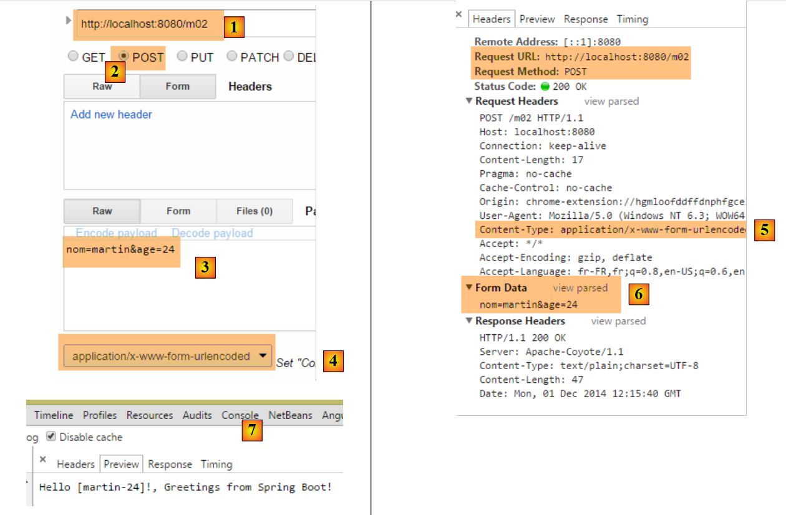
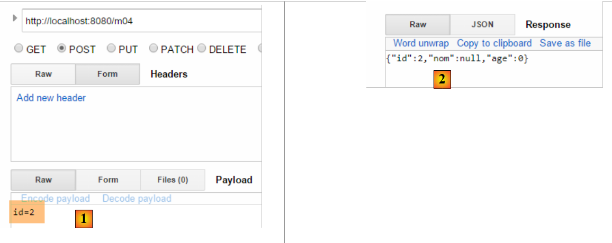
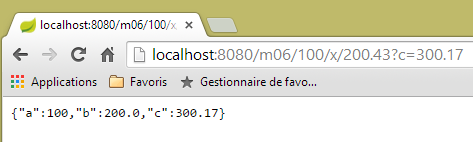
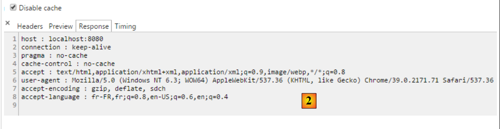
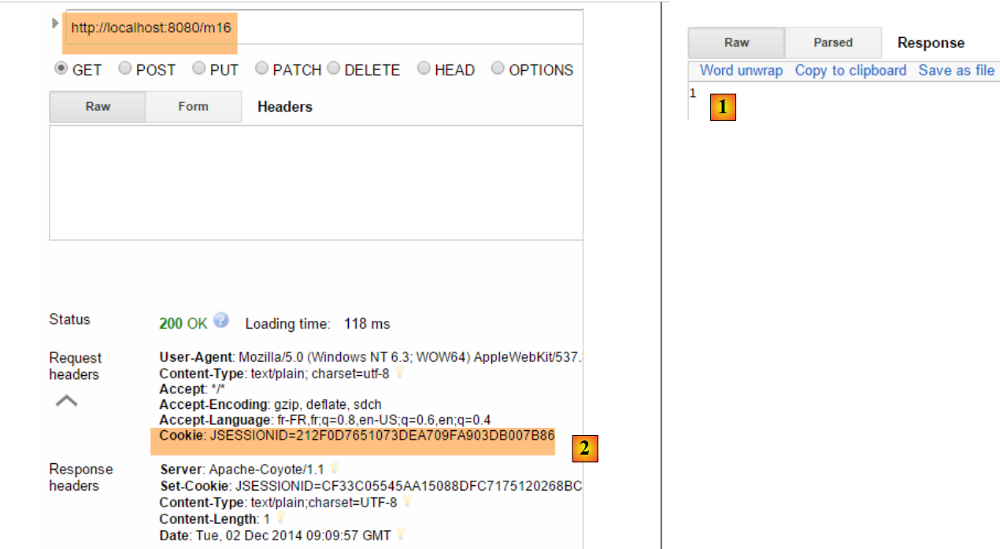
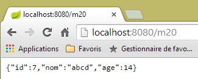
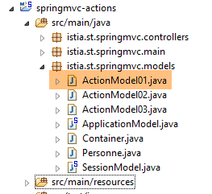

4. Actions: the model
Let’s return to the architecture of a Spring application MVC:
 |
In the previous chapter, we looked at the process that routes the request to the controller and the action that will handle it, a mechanism known as routing. We also presented the various responses an action can send back to the browser. So far, we have discussed actions that did not utilize the request presented to them. A [1] request carries various pieces of information that Spring MVC presents to the action in the form of a model. This term should not be confused with the model M of a view V [2c] that is produced by the action:
 |
- the client's request HTTP arrives in [1];
- in [2], the information contained in the request is transformed into an action model [3]—often, but not necessarily, a class—which serves as input to the action [4];
- in [4], the action, based on this model, will generate a response. This response will have two components: a view V [6] and the model M of this view [5];
- The view V [6] will use its model M [5] to generate the response HTTP intended for the client.
In the MVC model, the action [4] is part of the C (controller), the [5] view model is the M, and the [6] view is the V.
This chapter examines the mechanisms for linking the information carried by the request—which is, by nature, a string—to the action model, which can be a class with properties of various types.
Note: The term [Modèle d'action] is not a recognized term.
We create a new controller for these new actions:
 |
The [ActionModelController] controller will be as follows for now:
package istia.st.springmvc.controllers;
import org.springframework.web.bind.annotation.RestController;
@RestController
public class ActionModelController {
}
- line 5: note that the [@RestController] annotation causes the response sent to the client to be the string serialization of the controller's action results;
4.1. [/m01]: parameters of a GET
We add the following [/m01] action:
// ----------------------- retrieve parameters with GET------------------------
@RequestMapping(value = "/m01", method = RequestMethod.GET, produces = "text/plain;charset=UTF-8")
public String m01(String nom, String age) {
return String.format("Hello [%s-%s]!, Greetings from Spring Boot!", nom, age);
}
- Line 4: The action accepts two parameters named [nom] and [age]. They will be initialized with parameters bearing the same names in the request HTTP GET;
The results in Chrome are as follows: [1-3]:
 |
- in [1], the request GET with the parameters [nom] and [age];
- in [3], we can see that the action [/m01] successfully retrieved these parameters;
4.2. [/m02]: parameters of a POST
We add the following [/m02] action:
// ----------------------- retrieve parameters with POST------------------------
@RequestMapping(value = "/m02", method = RequestMethod.POST, produces = "text/plain;charset=UTF-8")
public String m02(String nom, String age) {
return String.format("Hello [%s-%s]!, Greetings from Spring Boot!", nom, age);
}
- Line 4: The action accepts two parameters named [nom] and [age]. They will be initialized with parameters bearing these same names in the request HTTP POST;
The results with [Advanced rest Client] are as follows:
 |
- in [1-3], the query POST with the parameters [nom] and [age];
- in [4-5], the header HTTP [Content-Type] of the request POST is set. It should be [Content-Type: application/x-www-form-urlencoded];
- In [6], [Form Data] provides the list of parameters for an operation POST. Here we see the parameters [nom] and [age];
- In [7], the server response showing that the [/m02] action successfully retrieved the parameters [nom] and [age]; ;
4.3. [/m03]: parameters with the same names
We saw in section 2.5.2.8 that the multi-select list could send parameters with the same names to the server. Let’s see how an action can retrieve them. We add the following action [/m03]:
// ----------------------- retrieve parameters with the same names-----------------
@RequestMapping(value = "/m03", method = RequestMethod.POST, produces = "text/plain;charset=UTF-8")
public String m03(String nom[]) {
return String.format("Hello [%s]!, Greetings from Spring Boot!", String.join("-", nom));
}
- Line 2: The action accepts a parameter named [name[]]. It will be initialized here with all parameters bearing this name, whether in a GET or a POST, since the request type has not been specified here;
The results are as follows:
 |
- via a POST [1], we send the parameters [2];
- parameters are also set in the URL and [3];
- in [4], the four parameters with the same name as [nom]: [Query String parameters] are the parameters of URL, [Form Data] are the posted parameters;
- in [5], we see that the action [/m03] retrieved the four parameters named [nom];
4.4. [/m04]: map the action’s parameters to a Java object
Consider the following new action [/m04]:
// ------ map parameters to an object (Command Object) ---------------
@RequestMapping(value = "/m04", method = RequestMethod.POST)
public Personne m04(Personne personne) {
return person;
}
- line 3: the action takes a Person of the following type as a parameter:
public class Personne {
// identifier
private Integer id;
// name
private String nom;
// age
private int age;
....
// getters and setters
...
}
- To create the parameter [Personne personne], Spring MVC creates a [new Personne()];
- then, if there are parameters with the names of the [id, nom, age] fields of the created object, it instantiates them using their setters;
- line 4: the action returns a [Personne] type, which will therefore be serialized into a string before being sent to the client. We have seen that by default, the serialization performed is a jSON serialization. The client should therefore receive the string jSON for a person;
Here is an example:
 |
- in [1], the parameters [id, nom, age] to construct an object [Personne];
- in [2], the string jSON for that person;
What happens if we don’t send all of a person’s fields? Let’s try:
 |
- in [2], only the parameter [id] has been initialized;
4.5. [/m05]: retrieve the elements of a URL
Consider the following new action [/m05]:
// ----------------------- retrieve elements from URL ------------------------
@RequestMapping(value = "/m05/{a}/x/{b}", method = RequestMethod.GET)
public Map<String, String> m05(@PathVariable("a") String a, @PathVariable("b") String b) {
Map<String, String> map = new HashMap<String, String>();
map.put("a", a);
map.put("b", b);
return map;
}
- line 2: the processed URL is of the form [/m05/{a}/x/{b}], where {param} is a parameter element of URL;
- line 3: the parameter elements of URL are retrieved with the annotation [@PathVariable];
- lines 4–6: the retrieved elements [a] and [b] are placed in a dictionary;
- line 7: the response will be the string jSON from this dictionary;
The results are as follows:
 |
4.6. [/m06]: Retrieve elements from URL and parameters
Consider the following new action [/m06]:
// -------- retrieve elements from URL and parameters---------------
@RequestMapping(value = "/m06/{a}/x/{b}", method = RequestMethod.GET)
public Map<String, Object> m06(@PathVariable("a") Integer a, @PathVariable("b") Double b, Double c) {
Map<String, Object> map = new HashMap<String, Object>();
map.put("a", a);
map.put("b", b);
map.put("c", c);
return map;
}
- line 3: we retrieve elements from both URL and [Integer a, Double b], as well as a parameter (GET or POST) [Double c];
- lines 4–7: these elements are placed in a dictionary;
- line 8: which forms the client's response, which will therefore receive the string jSON from this dictionary;
Here are the results:
 |
Note the / at the end of the path [http://localhost:8080/m06/100/x/200.43/]. Without it, the following incorrect result is obtained:
 |
4.7. [/m07]: access the entire request
Consider the following new action [/m07]:
// ------ access the HttpServletRequest query ------------------------
@RequestMapping(value = "/m07", method = RequestMethod.GET, produces = "text/plain;charset=UTF-8")
public String m07(HttpServletRequest request) {
// HTTP headers
Enumeration<String> headerNames = request.getHeaderNames();
StringBuffer buffer = new StringBuffer();
while (headerNames.hasMoreElements()) {
String name = headerNames.nextElement();
buffer.append(String.format("%s : %s\n", name, request.getHeader(name)));
}
return buffer.toString();
}
- line 3: we ask Spring MVC to inject the [HttpServletRequest request] object, which encapsulates all the information available about the request;
- lines 5–10: we retrieve all the HTTP headers from the request to assemble them into a string that we send to the client (line 11);
The results are as follows:
 |
- in [1], the HTTP headers of the request;
 |
- in [2], the response. It does indeed contain all the HTTP headers from the request.
4.8. [/m08]: access to the [Writer] object
Consider the following action:
// ----------------------- writer injection ------------------------
@RequestMapping(value = "/m08", method = RequestMethod.GET)
public void m08(Writer writer) throws IOException {
writer.write("Bonjour le monde !");
}
- line 3: Spring MVC injects the [Writer writer] object, which allows writing to the response stream to the client;
- line 3: the action returns a [void] type, indicating that it must construct the response to the client itself;
- line 4: adds text to the response stream to the client;
The results are as follows:
 |
- in [2], we see that the header HTTP [Content-Type] was not sent;
- In [3], the response;
4.9. [/m09]: access a header HTTP
Consider the following action:
// ----------------------- injection of RequestHeader ------------------------
@RequestMapping(value = "/m09", method = RequestMethod.GET)
public String m09(@RequestHeader("User-Agent") String userAgent) {
return userAgent;
}
- line 3: the [@RequestHeader("User-Agent")] annotation retrieves the HTTP and [User-Agent] headers;
- line 4: the text of this header is returned;
The results are as follows:
 |
- in [2], the header HTTP [User-Agent];
 |
- in [3], the action [/m08] correctly retrieved this header;
4.10. [/m10, /m11]: accessing a cookie
A cookie is generally a header HTTP that the:
- server sends to the client for the first time;
- client then systematically sends back to the server;
First, let’s create an action that creates the cookie:
// ----------------------- Cookie creation ------------------------
@RequestMapping(value = "/m10", method = RequestMethod.GET)
public void m10(HttpServletResponse response) {
response.addCookie(new Cookie("cookie1", "remember me"));
}
- line 3: we inject the [HttpServletResponse response] object to have full control over the response;
- line 4: we create a cookie with a key [cookie1] and a value [remember me] (Note: accented characters in a cookie’s value cause errors);
- line 3: the action returns nothing. Furthermore, it writes nothing to the response body. The client will therefore receive an empty document. The response is used only to add the HTTP cookie header;
Let’s look at the results:
 |
- in [1]: the request;
- in [2]: the response is empty;
- in [3]: the cookie created by the action;
Now let's create an action to retrieve this cookie, which the browser will now send with every request:
// ----------------------- Cookie injection ------------------------
@RequestMapping(value = "/m11", method = RequestMethod.GET)
public String m10(@CookieValue("cookie1") String cookie1) {
return cookie1;
}
- line 3: the annotation [@CookieValue("cookie1")] retrieves the cookie with the key [cookie1];
- line 4: this value will be the response sent to the client;
Let's look at the results:
 |
- in [2], we see that the browser returns the cookie;
- in [3], the action successfully retrieved it;
4.11. [/m12]: accessing the body of a POST
The posted parameters are usually accompanied by the header HTTP [Content-Type: application/x-www-form-urlencoded]. We can access the entire posted string. We create the following action:
// ----------- retrieve the body of a POST of type String------------------------
@RequestMapping(value = "/m12", method = RequestMethod.POST)
public String m12(@RequestBody String requestBody) {
return requestBody;
}
- line 3: the [@RequestBody] annotation allows retrieving the body of the POST. Here, we assume that it is of type [String];
- line 4: this body is returned to the client;
Here is a first example:
 |
- in [2], the posted values;
- in [3], the HTTP [Content-Type] header of the request;
- in [4], the server response;
The posted parameters do not always have the simple form [p1=v1&p2=v2] that we have often used so far. Let’s consider a more complex case:
 |
- in [2-3]: we enter the posted values in the form [clé:value];
- for [5], the string that was posted;
With type [Content-Type: application/x-www-form-urlencoded], the posted string must be in the form [p1=v1&p2=v2]. If we want to post anything, we’ll use type [Content-Type: text/plain]. Here’s an example:
 |
- In [2-3], we create the header HTTP [Content-Type]. By default, [5] is the one that will be used instead of the one defined in [6]. The [charset=utf-8] attribute is important. Without it, accented characters in the posted string are lost;
- in [4], the posted string that is correctly retrieved in [7];
4.12. [/m13, /m14]: retrieve posted values as jSON
It is possible to post parameters with the header HTTP [Content-Type: application/json]. We create the following action:
// ----------------------- retrieve the jSON body from a POST
@RequestMapping(value = "/m13", method = RequestMethod.POST, consumes = "application/json")
public String m13(@RequestBody Personne personne) {
return personne.toString();
}
- line 2: [consumes = "application/json"] specifies that the action expects a body of type jSON;
- line 3: [@RequestBody] represents this body. This annotation has been associated with an object of type [Personne]. The jSON body will be automatically deserialized into this object;
- line 4: the method [Personne].toString() is used to return something other than the string jSON that was sent;
Here is an example:
 |
- in [2], the posted string jSON;
- in [3], the [Content-Type] from the request;
- in [4], the server's response;
You can do the same thing differently:
// ----------------------- retrieve the jSON body from a POST 2 -------------------
@RequestMapping(value = "/m14", method = RequestMethod.POST, consumes = "text/plain")
public String m14(@RequestBody String requestBody) throws JsonParseException, JsonMappingException, IOException {
Personne personne = new ObjectMapper().readValue(requestBody, Personne.class);
return personne.toString();
}
- line 2: we specified that the method expects a stream of type [text/plain]. Spring MVC will then treat the request body as a type [String] (line 3);
- line 4: the jSON string is deserialized into a [Personne] object (see section 9.7, page 542);
The results are as follows:
 |
- in [3], make sure to use [text/plain];
4.13. [/m15]: retrieve the session
Let’s revisit the execution architecture of an action:
 |
The controller class is instantiated at the start of the client request and destroyed at the end of it. Therefore, it cannot be used to store data between requests, even if it is called repeatedly. You may want to store two types of data:
- data shared by all users of the web application. This is generally read-only data;
- data shared across requests from the same client. This data is stored in an object called a Session. We refer to this as the client session to denote the client’s memory. All requests from a client have access to this session. They can store and read information there.
 |
Above, we show the types of memory an action has access to:
- the application’s memory, which mostly contains read-only data and is accessible to all users;
- a specific user’s memory, or session, which contains read/write data and is accessible to successive requests from the same user;
- Although not shown above, there is a request memory, or request context. A user’s request can be processed through several successive actions. The request context allows Action 1 to pass information to Action 2.
Let’s look at a first example illustrating these different caches:
// ----------------------- retrieve session ------------------------
@RequestMapping(value = "/m15", method = RequestMethod.GET, produces = "text/plain;charset=UTF-8")
public String m15(HttpSession session) {
// retrieve the [compteur] key object from the session
Object objCompteur = session.getAttribute("compteur");
// convert it to an integer to increment it
int iCompteur = objCompteur == null ? 0 : (Integer) objCompteur;
iCompteur++;
// put it back in the session
session.setAttribute("compteur", iCompteur);
// we return it as the result of action
return String.valueOf(iCompteur);
}
Spring MVC maintains the user's session in an object of type [HttpSession].
- line 3: Spring MVC is asked to inject the [HttpSession] object into the action parameters;
- Line 5: An attribute named [compteur] is retrieved from the session. A session behaves like a dictionary, a set of [clé, valeur] pairs. If the key [compteur] does not exist in the session, a null pointer is returned;
- line 7: the value associated with the key [compteur] will be of type [Integer];
- line 8: increment the counter;
- line 10: the counter is updated in the session;
- line 12: the counter value is sent to the client;
When [/m15] is executed for the:
- first time, line 12, the counter will have the value 1;
- the second time, line 5 will retrieve this value 1 and set it to 2;
- ...
Here is an example of execution:
 |
- in [1], we correctly obtain the first value of the counter;
- In [2], the server sent a session cookie. It has the key [JSESSIONID] and a value that is a unique string of characters for each user. Remember that the browser always sends back the cookies it receives. So when we request the action [/m15] a second time, the client will send this cookie back, which will allow the server to recognize it and link it to its session. This is how the user’s session is maintained;
Let’s look at the second request:
 |
- In [3], we see that the client sends the session cookie. Note that in the server’s response, this session cookie is no longer present. It is now the client that sends it to be recognized;
- In [4], the second value of the counter. It has indeed been incremented;
4.14. [/m16]: Retrieving a scope object [session]
You may want to put all of a user’s session data into a single object and place only that object in the session. We’re taking this approach. We put the counter in the following [SessionModel] object:
 |
package istia.st.sprinmvc.models;
import org.springframework.context.annotation.Scope;
import org.springframework.context.annotation.ScopedProxyMode;
import org.springframework.stereotype.Component;
@Component
@Scope(value = "session", proxyMode = ScopedProxyMode.TARGET_CLASS)
public class SessionModel {
private int compteur;
public int getCompteur() {
return compteur;
}
public void setCompteur(int compteur) {
this.compteur = compteur;
}
}
- line 7: the annotation [@Component] is a Spring annotation (line 5) that makes the class [SessionModel] a component whose lifecycle is managed by Spring;
- line 8: the annotation [@Scope(value = "session", proxyMode = ScopedProxyMode.TARGET_CLASS)] is also a Spring annotation (lines 3–4). When Spring MVC encounters it, the corresponding class is created and placed in the user’s session. The [proxyMode = ScopedProxyMode.TARGET_CLASS] attribute is important. It is thanks to this attribute that Spring MVC creates one instance per user rather than a single instance for all users (singleton);
- line 11: the counter;
To ensure this new Spring component is recognized, you must verify the application configuration in the [Application] class:
package istia.st.springmvc.main;
import org.springframework.boot.SpringApplication;
import org.springframework.boot.autoconfigure.EnableAutoConfiguration;
import org.springframework.context.annotation.ComponentScan;
import org.springframework.context.annotation.Configuration;
@Configuration
@ComponentScan({"istia.st.springmvc.controllers"})
@EnableAutoConfiguration
public class Application {
public static void main(String[] args) {
SpringApplication.run(Application.class, args);
}
}
- Line 9: Spring components are searched for in the [istia.st.springmvc.controllers] package. This is no longer sufficient. We update this line as follows:
@ComponentScan({ "istia.st.springmvc.controllers", "istia.st.springmvc.models" })
We have added the package containing the [SessionModel] class.
Now, we add the following action:
@Autowired
private SessionModel session;
// ------ manage a scope object session [Autowired] -----------
@RequestMapping(value = "/m16", method = RequestMethod.GET, produces = "text/plain;charset=UTF-8")
public String m16() {
session.setCompteur(session.getCompteur() + 1);
return String.valueOf(session.getCompteur());
}
- Lines 1-2: The Spring component [SessionModel] is injected into the controller as [@Autowired]. It is worth noting here that a Spring controller is a singleton. It is therefore paradoxical to inject a component with a shorter scope into it, in this case [Session]. This is where the [@Scope(value = "session", proxyMode = ScopedProxyMode.TARGET_CLASS)] annotation on the [SessionModel] component comes into play. Every time the controller code accesses the [session] field in line 2, a proxy method is executed to return the session of the request currently being processed by the controller;
- Line 6: The [HttpSession] object is no longer needed in the action parameters;
- line 7: the counter is retrieved and incremented;
- line 8: its value is returned;
Here is an example of execution:
The first time
 |
The second time
 |
Now, let’s take another browser that will represent a second user. Here we’ll use the Opera browser:
 |
Above, in [1], this second user retrieves a counter value of 1. This shows that their session and that of the first user are different. If we look at the client/server exchanges (Ctrl-Shift-I for Opera as well), we see in [2] that this second user has a session cookie different from that of the first user. This is what ensures the independence of the sessions.
4.15. [/m17]: Retrieve a scope object from [application]
Let’s revisit the execution architecture of an action:
 |
We know how to build the user session. We will now build a scope object [application] whose content will be read-only and accessible to all users. We introduce the class [ApplicationModel], which will be the scope object [application]:
 |
package istia.st.springmvc.models;
import java.util.concurrent.atomic.AtomicLong;
import org.springframework.stereotype.Component;
@Component
public class ApplicationModel {
// meter
private AtomicLong compteur = new AtomicLong(0);
// getters and setters
public AtomicLong getCompteur() {
return compteur;
}
public void setCompteur(AtomicLong compteur) {
this.compteur = compteur;
}
}
- Line 5: The [@Component] annotation ensures that the [ApplicationModel] class will be a Spring-managed component. The default nature of Spring components is the [singleton] type: the component is created as a single instance when the Spring container is instantiated, i.e., generally when the application starts. We can use this lifecycle to store configuration information in the singleton that will be accessible to all users;
- line 11: a counter of type [AtomicLong]. This type has a method [incrementAndGet] known as atomic. This means that a thread executing this method is guaranteed that another thread will not read the counter’s value (Get) between its read (Get) and its increment (increment) by the first thread, which would cause errors since two threads would read the same counter value, and the counter, instead of being incremented by two, would be incremented by one;
We create the following new action [/m17]:
@Autowired
private ApplicationModel application;
// ----- manage an application scope object [Autowired] ------------------------
@RequestMapping(value = "/m17", method = RequestMethod.GET, produces = "text/plain;charset=UTF-8")
public String m17() {
return String.valueOf(application.getCompteur().incrementAndGet());
}
- lines 1-2: we inject the [ApplicationModel] component into the controller. It is a singleton. Therefore, each user will have a reference to the same object;
- Line 7: We return the scope counter [application] after incrementing it;
Here are two examples, one with Chrome and the other with Opera:
 |  |
Above, we can see that both browsers worked with the same counter, which was not the case with the session. These two browsers represent two different users who both have access to the scope data [application]. Generally speaking, you should avoid placing read/write information in [application] scope objects, as was done above with the counter. This is because the execution threads of different users access the [application] scope data simultaneously. If there is writable information, write accesses must be synchronized, as was done above with the type [AtomicLong]. Concurrent accesses are a source of programming errors. Therefore, it is preferable to place only read-only information in [application] scope objects.
4.16. [/m18]: Retrieve a scope object [session] using [@SessionAttributes]
There is another way to retrieve information from the [session] scope. We will store the following object in the session:
package istia.st.springmvc.models;
public class Container {
// the meter
public int compteur=10;
// getters and setters
public int getCompteur() {
return compteur;
}
public void setCompteur(int compteur) {
this.compteur = compteur;
}
}
We will use this object with the following two actions:
// use of [@SessionAttribute] ----------------------
@RequestMapping(value = "/m18", method = RequestMethod.GET)
public void m18(HttpSession session) {
// here we put the key [container] in the session
session.setAttribute("container", new Container());
}
// use of [@ModelAttribute] ----------------------
// the session key [container] will be injected here
@RequestMapping(value = "/m19", method = RequestMethod.GET)
public String m19(@ModelAttribute("container") Container container) {
container.setCompteur(1 + container.getCompteur());
return String.valueOf(container.getCompteur());
}
- lines 3–6: the [/m18] action returns no result. It is used solely to create an object in the session with the key [container];
- line 11: In the [/m19] action, the [@ModelAttribute] annotation is used. The behavior of this annotation is quite complex. The [container] parameter of this annotation can refer to various things, and in particular to a session object. For this to work, the object must have been declared with a [@SessionAttributes] annotation on the class itself:
@RestController
@SessionAttributes({"container"})
public class ActionModelController {
- Line 2 above designates the key [container] as part of the session attributes;
To summarize:
- in [/m18], the key [container] is placed in the session;
- the annotation [@SessionAttributes({"container"})] allows this key to be injected into a parameter annotated with [@ModelAttribute("container")];
- not visible in the following execution example, but information annotated with [@ModelAttribute] is automatically included in the M model passed to the V view;
Here is an example of execution. First, we place the key [container] into the session using the action [/m18] [1]. Next, we call the action [/m19] twice to see the counter increment.
 |
4.17. [/m20-/m23]: Information injection with [@ModelAttribute]
Consider the following new action:
// the p attribute will be included in all [Model] view models ----------------
@ModelAttribute("p")
public Personne getPersonne() {
return new Personne(7,"abcd", 14);
}
// ---------------instanciation of @ModelAttribute --------------------------
// will be injected if it is in the
// will be injected if the controller has defined a method for this attribute
// can come from URL fields if a String --> attribute type converter exists
// otherwise is built with the default constructor
// then the model attributes are initialized with the parameters of GET or POST
// the final result will be part of the model produced by the action
// the p attribute is injected into the arguments------------------------
@RequestMapping(value = "/m20", method = RequestMethod.GET)
public Personne m20(@ModelAttribute("p") Personne personne) {
return personne;
}
- Lines 2–5: define a model attribute named [p]. This is the model M of a view V, represented by a type [Model] in Spring MVC. A model behaves like a dictionary of [clé, valeur] pairs. Here, the key [p] is associated with the object [Personne] constructed by the method [getPersonne]. The method name can be anything;
- line 17: the key template attribute [p] is injected into the action’s parameters. This injection follows the rules in lines 8–12. Here, we are in the case defined in line 9. Therefore, in line 17, the parameter [Personne personne] will be the object [Personne(7,'abcd',14)];
- Line 18: The object [personne] is returned for verification. It will be serialized as jSON before being sent to the client.
Here is an example:
 |
Now, let’s examine the following action:
// --------- attribute p is automatically included in the M model of view V
@RequestMapping(value = "/m21", method = RequestMethod.GET)
public String m21(Model model) {
return model.toString();
}
An action that wants to display a view V must construct its model M. Spring MVC manages this with a type [Model] that can be injected into the action’s parameters. Initially, this model is empty or contains information tagged with the [@ModelAttribute] annotation. The action may or may not enrich this model before passing it to a view.
- Line 3: injection of the M model;
- line 4: we want to see what’s inside. We serialize it into a string to send it to the client. Here, the [Personne.toString] method will be used. It must therefore exist;
Here is an execution:
 |
Above, we see that the instructions:
@ModelAttribute("p")
public Personne getPersonne() {
return new Personne(7,"abcd", 14);
}
have created an entry [p, Personne(7,'abcd',14)] in the model. This is always the case.
Now consider the following case:
// otherwise is built with the default constructor
// then the model attributes are initialized with the parameters of GET or POST
with the following action:
// --------- model attribute [param1] is part of the model but is not initialized
@RequestMapping(value = "/m22", method = RequestMethod.GET)
public String m22(@ModelAttribute("param1") String p1, Model model) {
return model.toString();
}
- Line 3: The model attribute with key [param1] does not exist. In this case, the associated type must have a default constructor. This is the case here for the type [String], but we cannot write [@ModelAttribute("param1") Integer p1] because the class [Integer] does not have a default constructor;
- line 4: we return the model to check if the key model attribute [param1] is part of it;
Here is an example of execution:
 |
The model attribute [param1] is indeed present in the model, but the method [toString] of the associated value provides no information about this value.
Now let’s consider the following action, where we explicitly include information in the model:
// --------- model attribute [param2] is explicitly set in the model
@RequestMapping(value = "/m23", method = RequestMethod.GET)
public String m23(String p2, Model model) {
model.addAttribute("param2",p2);
return model.toString();
}
- Line 4: The value [p2] retrieved on line 3 is placed in the model associated with the key [param2]:
Here is an example of execution:
 |
The rules change if the action parameter is an object. Here is a first example:
// ------ template attribute [unePersonne] is automatically set in the template
@RequestMapping(value = "/m23b", method = RequestMethod.GET)
public String m23b(@ModelAttribute("unePersonne") Personne p1, Model model) {
return model.toString();
}
The action does not modify the model provided to it. The result is as follows:
 |
We can see that the annotation [@ModelAttribute("unePersonne") Personne p1] has placed the person [p1] in the model, associated with the key [unePersonne].
Now let’s consider the following action:
// --------- person p1 is automatically included in the model
// -------- with class name as key, 1st character lowercase
@RequestMapping(value = "/m23c", method = RequestMethod.GET)
public String m23c(Personne p1, Model model) {
return model.toString();
}
- line 4: we did not include the annotation [@ModelAttribute];
The result is as follows:
 |
We observe that the presence of the parameter [Personne p1] placed the person [p1] in the model, associated with the key [personne], which is the name of the class [Personne] with the first character in lowercase.
4.18. [/m24]: validation of the action template
Consider the following action model [ActionModel01]:
 |
package istia.st.springmvc.models;
import javax.validation.constraints.NotNull;
public class ActionModel01 {
// data
@NotNull
private Integer a;
@NotNull
private Double b;
// getters and setters
...
}
- lines 8 and 9: the annotation [@NotNull] is a validation constraint indicating that the annotated data cannot be null;
Let's now examine the following action:
// ----------------------- model validation ------------------------
@RequestMapping(value = "/m24", method = RequestMethod.GET)
public Map<String, Object> m24(@Valid ActionModel01 data, BindingResult result) {
Map<String, Object> map = new HashMap<String, Object>();
// mistakes?
if (result.hasErrors()) {
StringBuffer buffer = new StringBuffer();
// browsing the error list
for (FieldError error : result.getFieldErrors()) {
buffer.append(String.format("[%s:%s:%s:%s:%s]", error.getField(), error.getRejectedValue(),
String.join(" - ", error.getCodes()), error.getCode(),error.getDefaultMessage()));
}
map.put("errors", buffer.toString());
} else {
// no errors
Map<String, Object> mapData = new HashMap<String, Object>();
mapData.put("a", data.getA());
mapData.put("b", data.getB());
map.put("data", mapData);
}
return map;
}
- Line 3: A [ActionModel01] object will be instantiated and its [a, b] fields initialized with parameters of the same names. The [@Valid] annotation indicates that validity constraints must be checked. The results of this check will be placed in the [BindingResult]-type parameter (second parameter). The following checks will be performed:
- Because of the annotations [@NotNull], the parameters [a] and [b] must be present;
- Because of the type [Integer a], the parameter [a], which is inherently of type [String], must be convertible to type [Integer];
- Because of the type [Double b], the parameter [b], which is inherently of type [String], must be convertible to type [Double];
With the annotation [@Valid], validation errors will be reported in the parameter [BindingResult result]. Without the annotation [@Valid], validation errors cause the action to crash, and the server sends the client a HTTP response with a 500 status (Internal server error error).
- Line 3: The action’s result is of type [Map]. The string jSON from this result will be sent to the client. Two types of dictionaries are constructed:
- in case of failure, a dictionary with an entry ['errors', value] where [value] is a string describing all errors (line 13);
- in case of success, a dictionary with an entry ['data',value], where [value] is itself a dictionary with two entries: ['a', value], ['b', value] (line 19);
- lines 9–12: for each detected error [error], the string [error.getField(), error.getRejectedValue(), error.Codes, error.getDefaultMessage()] is constructed:
- the first element is the erroneous field, [a] or [b],
- the second element is the rejected value, such as [x],
- the third element is a list of error codes. We will look at their roles shortly;
- the fourth element is the error code. It is part of the previous list;
- the last element is the default error message. In fact, there can be multiple error messages;
Here are some examples of execution:
 |
Above, we see that:
- the assignment of 'x' to field [ActionModel01.a] failed, and the error message explains why;
- the assignment of 'y' to field [ActionModel01.b] failed, and the error message explains why;
Note the error codes for field [a]: [typeMismatch.actionModel01.a - typeMismatch.a - typeMismatch.java.lang.Integer - typeMismatch]. We will return to these error codes when it is necessary to customize the error message. Note that the error code is [typeMismatch].
Another example:
 |
Here, the parameters [a] and [b] were not passed. The validators [@NotNull] of the action model [ActionModel01] then performed their role;
Finally, correct values:
 |
4.19. [m/24]: customizing error messages
Let’s return to a screenshot from the previous example:
|
Above, we see the default error messages. Clearly, we cannot keep these in a real application. It is possible to customize these error messages. To do this, we will use the error codes. Above, we see that the error for the field [a] has the following codes: [typeMismatch.actionModel01.a - typeMismatch.a - typeMismatch.java.lang.Integer - typeMismatch]. These error codes range from the most specific to the least specific:
- [typeMismatch.actionModel01.a]: type error in the [a] field of type [ActionModel01];
- [typeMismatch.a]: type error on a field named [a];
- [typeMismatch.java.lang.Integer]: type error on an Integer type;
- [typeMismatch]: type error;
We also note that the error code for the field [a] obtained by [error.getCode()] is [typeMismatch] (see screenshot above).
We will place the error messages in a properties file:
 |
The file [messages.properties] above will be as follows:
NotNull=Le champ ne peut être vide
typeMismatch=Format invalide
typeMismatch.model01.a=Le paramètre [a] doit être entier
Each line has the following format:
Here, the key will be an error code and the message will be the error message associated with that code.
Here are the error codes for the two fields:
- [typeMismatch.actionModel01.a - typeMismatch.a - typeMismatch.java.lang.Integer - typeMismatch], when the parameter [a] is invalid;
- [typeMismatch.actionModel01.b - typeMismatch.b - typeMismatch.java.lang.Double - typeMismatch:typeMismatch ] when the parameter [b] is invalid;
- [NotNull.actionModel01.a - NotNull.a - NotNull.java.lang.Integer - NotNull] when the parameter [a] is missing;
- [NotNull.actionModel01.b - NotNull.b - NotNull.java.lang.Double - NotNull] when parameter [b] is missing;
The file [messages.properties] must contain an error message for all possible error cases. For the case where:
- parameters [a] and [b] are missing, code [NotNull] will be used;
- if the [a] parameter is incorrect, we have set up messages for two codes, [typeMismatch.actionModel01.a, typeMismatch]. We will see which one is used;
- If the [b] parameter is incorrect, the code [typeMismatch] will be used;
To use the [messages.properties] file, you must configure Spring:
 |
We are removing the configuration annotations from the [Application] class:
package istia.st.springmvc.main;
import org.springframework.boot.SpringApplication;
public class Application {
public static void main(String[] args) {
SpringApplication.run(Config.class, args);
}
}
- Line 8: The Spring Boot application is launched. The first parameter of the static method [SpringApplication.run] is the class that now configures the application;
The [Config] class is as follows:
package istia.st.springmvc.main;
import org.springframework.boot.autoconfigure.EnableAutoConfiguration;
import org.springframework.context.MessageSource;
import org.springframework.context.annotation.Bean;
import org.springframework.context.annotation.ComponentScan;
import org.springframework.context.annotation.Configuration;
import org.springframework.context.support.ResourceBundleMessageSource;
import org.springframework.web.servlet.config.annotation.WebMvcConfigurerAdapter;
@Configuration
@ComponentScan({ "istia.st.springmvc.controllers", "istia.st.springmvc.models" })
@EnableAutoConfiguration
public class Config extends WebMvcConfigurerAdapter {
@Bean
public MessageSource messageSource() {
ResourceBundleMessageSource messageSource = new ResourceBundleMessageSource();
messageSource.setBasename("i18n/messages");
return messageSource;
}
}
- lines 11–13: these are the configuration annotations that were previously in the [Application] class;
- line 14: to configure a Spring application MVC, you must extend the [WebMvcConfigurerAdapter] class;
- line 15: the [@Bean] annotation introduces a Spring component, a singleton;
- line 16: we define a bean named [messageSource] (the method name). This bean is used to define the application’s message files and must have this name;
- lines 17–19: tell Spring that the message file:
- is located in the [i18n] folder in the project’s classpath (line 18),
- is named [messages.properties] (line 18). In fact, the term [messages] is the root of the message file names rather than the name itself. We will see that in the context of internationalization, there can be multiple message files, one per supported locale. Thus, we might have [messages_fr.properties] for French and [messages_en.properties] for English. The suffixes added to the root [messages] are standardized. You cannot use just anything;
In the STS project, you must place the [i18n] folder in the resources folder because it is added to the project’s classpath:
 |
To use this file, we create the following new action:
// model validation, error message handling ------------------------
@RequestMapping(value = "/m25", method = RequestMethod.GET)
public Map<String, Object> m25(@Valid ActionModel01 data, BindingResult result, HttpServletRequest request)
throws Exception {
// results dictionary
Map<String, Object> map = new HashMap<String, Object>();
// spring application context
WebApplicationContext ctx = WebApplicationContextUtils.getWebApplicationContext(request.getServletContext());
// local
Locale locale = RequestContextUtils.getLocale(request);
// mistakes?
if (result.hasErrors()) {
StringBuffer buffer = new StringBuffer();
for (FieldError error : result.getFieldErrors()) {
// search for error msg using error codes
// the msg is searched in the message files
// error codes in table format
String[] codes = error.getCodes();
// in chain form
String listCodes = String.join(" - ", codes);
// research
String msg = null;
int i = 0;
while (msg == null && i < codes.length) {
try {
msg = ctx.getMessage(codes[i], null, locale);
} catch (Exception e) {
}
i++;
}
// have we found?
if (msg == null) {
throw new Exception(String.format("Indiquez un message pour l'un des codes [%s]", listCodes));
}
// found - add error msg to error msg chain
buffer.append(String.format("[%s:%s:%s:%s]", locale.toString(), error.getField(), error.getRejectedValue(),
String.join(" - ", msg)));
}
map.put("errors", buffer.toString());
} else {
// ok
Map<String, Object> mapData = new HashMap<String, Object>();
mapData.put("a", data.getA());
mapData.put("b", data.getB());
map.put("data", mapData);
}
return map;
}
This code is similar to that of action [/m24]. Here are the differences:
- line 3: we inject the [HttpServletRequest request] request into the action’s parameters. We’ll need this;
- lines 7–8: we retrieve the Spring context. This context contains all the Spring beans in the application. It also provides access to the message files;
- line 10: we retrieve the application locale. This term is explained in more detail below;
- lines 15–31: For each error, we search for a message corresponding to one of these error codes. They are searched for in the order of the codes found in [error.getCodes()]. As soon as a message is found, we stop;
- line 26: how to retrieve a message from [messages.properties]:
- the first parameter is the code searched for in [messages.properties],
- the second is an array of parameters because messages are sometimes parameterized. This is not the case here,
- the third is the locale used (obtained on line 10). The locale specifies the language used, [fr_FR] for French (France), [en_US] for English (USA). The message is searched for in messages_[locale].properties, then for example in [messages_fr_FR.properties]. If this file does not exist, the message is looked for in [messages_fr.properties]. If this file does not exist, the message is looked for in [messages.properties]. It is this last case that will work for us;
- lines 25–29: somewhat unexpectedly, when searching for a non-existent code in a message file, we get an exception rather than a null pointer;
- lines 33–35: we handle the case where there is no error message;
- lines 37–38: we construct the error string. In it, we include the locale and the error message found;
Here are some examples of execution:
 |
We see that:
- the application locale is [fr_FR]. This is a default value since we haven’t done anything to initialize it;
- the message used for both fields is as follows:
NotNull=Le champ ne peut être vide
Another example:
 |
We see that:
- the error message used for the parameter [a] is as follows:
typeMismatch.actionModel01.a=Le paramètre [a] doit être entier
- The error message used for parameter [b] is as follows:
typeMismatch=Format invalide
Why are there two different messages? For parameter [a], there were two possible messages:
typeMismatch=Format invalide
typeMismatch.actionModel01.a=Le paramètre [a] doit être entier
The error codes were examined in the order of the table [error.getCodes()]. It turns out that this order goes from the most specific code to the most general code. That is why code [typeMismatch.model01.a] was found first.
4.20. [/m25]: Internationalization of a Spring Application MVC
Now that we know how to customize error messages in French, we would also like to have them in English, which brings us to the internationalization of a Spring application MVC. To handle this, we will expand the configuration class [Config], which becomes the following:
package istia.st.springmvc.main;
import java.util.Locale;
import org.springframework.boot.autoconfigure.EnableAutoConfiguration;
import org.springframework.context.MessageSource;
import org.springframework.context.annotation.Bean;
import org.springframework.context.annotation.ComponentScan;
import org.springframework.context.annotation.Configuration;
import org.springframework.context.support.ResourceBundleMessageSource;
import org.springframework.web.servlet.config.annotation.InterceptorRegistry;
import org.springframework.web.servlet.config.annotation.WebMvcConfigurerAdapter;
import org.springframework.web.servlet.i18n.CookieLocaleResolver;
import org.springframework.web.servlet.i18n.LocaleChangeInterceptor;
@Configuration
@ComponentScan({ "istia.st.springmvc.controllers", "istia.st.springmvc.models" })
@EnableAutoConfiguration
public class Config extends WebMvcConfigurerAdapter {
@Bean
public MessageSource messageSource() {
ResourceBundleMessageSource messageSource = new ResourceBundleMessageSource();
messageSource.setBasename("i18n/messages");
return messageSource;
}
@Bean
public LocaleChangeInterceptor localeChangeInterceptor() {
LocaleChangeInterceptor localeChangeInterceptor = new LocaleChangeInterceptor();
localeChangeInterceptor.setParamName("lang");
return localeChangeInterceptor;
}
@Override
public void addInterceptors(InterceptorRegistry registry) {
registry.addInterceptor(localeChangeInterceptor());
}
@Bean
public CookieLocaleResolver localeResolver() {
CookieLocaleResolver localeResolver = new CookieLocaleResolver();
localeResolver.setCookieName("lang");
localeResolver.setDefaultLocale(new Locale("fr"));
return localeResolver;
}
}
- Lines 28–32: A request interceptor is created. A request interceptor extends the [HandlerInterceptor] interface. Such a class inspects the incoming request before it is processed by an action. Here, the [localeChangeInterceptor] interceptor will search for a parameter named [lang] in the incoming request, GET, or POST, and will change the application locale based on that parameter. Thus, if the parameter is [lang=en_US], the application locale will become English (USA);
- lines 34–37: we redefine the [WebMvcConfigurerAdapter.addInterceptors] method to add the previous interceptor;
- lines 39–45: are used to configure how the locale will be encapsulated in a cookie. We know that a cookie can serve as user memory, since the client browser systematically sends it back to the server. The previous interceptor [localeChangeInterceptor] creates a cookie encapsulating the locale. Line 42 assigns the name [lang] to this cookie. The cookie is also used to change the locale;
- line 43: indicates that in the absence of the [lang] cookie, the locale will be [fr];
In summary, the locale of a request can be set in two ways:
- by passing a parameter named [lang];
- by sending a cookie named [lang]. This cookie is automatically created as a result of the previous method;
To use this locale, we will create message files for the locales [fr] and [en]:
 |
The file [messages_fr.properties] is as follows:
NotNull=Le champ ne peut être vide
typeMismatch=Format invalide
typeMismatch.actionModel01.a=Le paramètre [a] doit être entier
The file [messages_en.properties] is as follows:
NotNull=The field can't be empty
typeMismatch=Invalid format
typeMismatch.actionModel01.a=Parameter [a] must be an integer
The file [messages.properties] is a copy of the file [messages_en.properties]. Note that the file [messages.properties] is used when no file corresponding to the request locale is found. In our case, if the user sends a [lang=en] parameter, since the [messages_en.properties] file does not exist, the [messages.properties] file will be used. The user will therefore see messages in English.
Let’s try it. First, in Chrome’s developer tools (Ctrl-Shift-I), check your cookies:
 |
If you have a cookie named [lang], delete it. Then, using Chrome, request URL and [http://localhost:8080/m25]:
 |
The browser sent the following headers:
We can see that in these headers, there is no [lang] cookie. In this case, our code uses the locale [fr]. This is what the screenshot shows. Let’s try another case:
 |
- in [1], we passed the parameter [lang=en] to change the locale to [en];
- in [2], we see the new locale;
- in [3], the message is now in English;
Now let’s look at the exchanges in HTTP:
 |
We can see above that the server sent back a cookie [lang]. This has an important consequence: the locale for the next request will be [en] again because of the cookie [lang] that will be sent back by the browser. We should therefore keep the messages in English. Let’s verify this:
 |
Above, we see that the locale has remained [en]. Because of the cookie that the browser systematically sends, it will remain that way until the user changes it by sending the parameter [lang] as follows:
 |
4.21. [/m26]: injecting the locale into the action template
In the previous example, we saw one way to retrieve the locale from the request:
@RequestMapping(value = "/m25", method = RequestMethod.GET)
public Map<String, Object> m25(@Valid ActionModel01 data, BindingResult result, HttpServletRequest request)
throws Exception {
...
// local
Locale locale = RequestContextUtils.getLocale(request);
// mistakes?
The locale can be directly injected into the action parameters. Here is an example:
@RequestMapping(value = "/m26", method = RequestMethod.GET)
public String m26(Locale locale) {
return String.format("locale=%s", locale.toString());
}
 |  |
 |
As seen above, there is no validation of the requested locale. However, the following browser request triggers a server-side exception because the locale cookie it receives is incorrect.
4.22. [/m27]: Validating a Model with Hibernate Validator
Consider the following new action:
//model validation with Hibernate Validator ------------------------
@RequestMapping(value = "/m27", method = RequestMethod.POST)
public Map<String, Object> m27(@Valid ActionModel02 data, BindingResult result) {
Map<String, Object> map = new HashMap<String, Object>();
// mistakes?
if (result.hasErrors()) {
// browsing the error list
for (FieldError error : result.getFieldErrors()) {
map.put(error.getField(),
String.format("[message=%s, codes=%s]", error.getDefaultMessage(), String.join("|", error.getCodes())));
}
} else {
// no errors
map.put("data", data);
}
return map;
}
Here we have code we’ve seen several times now:
- line 3: the [/m27] action is requested via a POST;
- lines 8–11: each error will be identified by [champ, message] with:
- field: the field containing the error,
- message: the associated error message and the list of error codes;
- line 14: if there are no errors, the string jSON is returned with the posted values;
On line 3, we use the following action template:
 |
package istia.st.springmvc.models;
import java.util.Date;
import javax.validation.constraints.AssertFalse;
import javax.validation.constraints.AssertTrue;
import javax.validation.constraints.Future;
import javax.validation.constraints.Max;
import javax.validation.constraints.Min;
import javax.validation.constraints.NotNull;
import javax.validation.constraints.Past;
import javax.validation.constraints.Pattern;
import javax.validation.constraints.Size;
import org.hibernate.validator.constraints.Email;
import org.hibernate.validator.constraints.Length;
import org.hibernate.validator.constraints.NotBlank;
import org.hibernate.validator.constraints.Range;
import org.hibernate.validator.constraints.URL;
public class ActionModel02 {
@NotNull(message = "La donnée est obligatoire")
@AssertFalse(message = "Seule la valeur [false] est acceptée")
private Boolean assertFalse;
@NotNull(message = "La donnée est obligatoire")
@AssertTrue(message = "Seule la valeur [true] est acceptée")
private Boolean assertTrue;
@NotNull(message = "La donnée est obligatoire")
@Future(message = "Il faut une date postérieure à aujourd'hui")
private Date dateInFuture;
@NotNull(message = "La donnée est obligatoire")
@Past(message = "Il faut une date antérieure à aujourd'hui")
private Date dateInPast;
@NotNull(message = "La donnée est obligatoire")
@Max(value = 100, message = "Maximum 100")
private Integer intMax100;
@NotNull(message = "La donnée est obligatoire")
@Min(value = 10, message = "Minimum 10")
private Integer intMin10;
@NotNull(message = "La donnée est obligatoire")
@NotBlank(message = "La chaîne doit être non blanche")
private String strNotBlank;
@NotNull(message = "La donnée est obligatoire")
@Size(min = 4, max = 6, message = "La chaîne doit avoir entre 4 et 6 caractères")
private String strBetween4and6;
@NotNull(message = "La donnée est obligatoire")
@Pattern(regexp = "^\\d{2}:\\d{2}:\\d{2}$", message = "Le format doit être hh:mm:ss")
private String hhmmss;
@NotNull(message = "La donnée est obligatoire")
@Email(message = "Adresse invalide")
private String email;
@NotNull(message = "La donnée est obligatoire")
@Length(max = 4, min = 4, message = "La chaîne doit avoir 4 caractères exactement")
private String str4;
@Range(min = 10, max = 14, message = "La valeur doit être dans l'intervalle [10,14]")
@NotNull(message = "La donnée est obligatoire")
private Integer int1014;
@URL(message = "URL invalide")
private String url;
// getters and setters
...
}
The class uses validation constraints from two packages:
- [javax.validation.constraints] on lines 5–13;
- [org.hibernate.validator.constraints] on lines 15–19;
The Maven dependencies for these two packages are included in the project:
 |
Here, we will not use internationalized messages but messages defined within the constraint using the [message] attribute. To test this action, we will use [Advanced Rest Client]:
 |
- in [1-2], the request POST;
- in [3], the header HTTP [Content-Type] to be used;
- in [4], the link [Add new value] allows you to add a pair [paramètre, value];
- in [5], insert a field from [ActionModel02], in this case the field [assertFalse]:
@NotNull(message = "La donnée est obligatoire")
@AssertFalse(message = "Seule la valeur [false] est acceptée")
private Boolean assertFalse;
- In [6], enter an incorrect value to see an error message. Above, the constraint [@AssertFalse] requires that the field [assertFalse] have the value [false];
 |
- in [7], the server response: the [@NotNull] constraint for empty fields was triggered and the associated error message was returned;
- in [8], the message for field [assertFalse] for which constraint [@AssertFalse] was not verified, along with the error codes. Note that these codes may be associated with internationalized messages;
Here is another example:
 |

The reader is invited to test the various error cases up to POST, where all data is valid:
 |  |
Note: The date format is the Anglo-Saxon format: mm/dd/yyyy.
4.23. [/m28]: Externalizing error messages
In the [ActionModel02] class, we have hard-coded the messages. It is preferable to externalize them into message files. We follow the example of the [/m25] action. We create the following new action template [ActionModel03]:
 |
package istia.st.springmvc.models;
import java.util.Date;
import javax.validation.constraints.AssertFalse;
import javax.validation.constraints.AssertTrue;
import javax.validation.constraints.Future;
import javax.validation.constraints.Max;
import javax.validation.constraints.Min;
import javax.validation.constraints.NotNull;
import javax.validation.constraints.Past;
import javax.validation.constraints.Pattern;
import javax.validation.constraints.Size;
import org.hibernate.validator.constraints.Email;
import org.hibernate.validator.constraints.Length;
import org.hibernate.validator.constraints.NotBlank;
import org.hibernate.validator.constraints.Range;
import org.hibernate.validator.constraints.URL;
public class ActionModel03 {
@NotNull
@AssertFalse
private Boolean assertFalse;
@NotNull
@AssertTrue
private Boolean assertTrue;
@NotNull
@Future
private Date dateInFuture;
@NotNull
@Past
private Date dateInPast;
@NotNull
@Max(value = 100)
private Integer intMax100;
@NotNull
@Min(value = 10)
private Integer intMin10;
@NotNull
@NotBlank
private String strNotBlank;
@NotNull
@Size(min = 4, max = 6)
private String strBetween4and6;
@NotNull
@Pattern(regexp = "^\\d{2}:\\d{2}:\\d{2}$")
private String hhmmss;
@NotNull
@Email
private String email;
@NotNull
@Length(max = 4, min = 4)
private String str4;
@Range(min = 10, max = 14)
@NotNull
private Integer int1014;
@URL
private String url;
// getters and setters
...
}
Error messages are externalized in the [messages.properties] files:
 |
The [messages_fr.properties] file is as follows:
NotNull=Le champ ne peut être vide
typeMismatch=Format invalide
typeMismatch.actionModel01.a=Le paramètre [a] doit être entier
Range.actionModel03.int1014=La valeur doit être dans l'intervalle [10,14]
NotBlank.actionModel03.strNotBlank=La chaîne doit être non blanche
AssertFalse.actionModel03.assertFalse=Seule la valeur [false] est acceptée
Pattern.actionModel03.hhmmss=Le format doit être hh:mm:ss
Past.actionModel03.dateInPast=Il faut une date antérieure ou égale à celle d'aujourd'hui
Future.actionModel03.dateInFuture=Il faut une date postérieure à celle d'aujourd'hui
Length.actionModel03.str4=La chaîne doit avoir 4 caractères exactement
Min.actionModel03.intMin10=Minimum 10
Max.actionModel03.intMax100=Maximum 100
AssertTrue.actionModel03.assertTrue=Seule la valeur [true] est acceptée
Email.actionModel03.email=Adresse invalide
Size.actionModel03.strBetween4and6=La chaîne doit avoir entre 4 et 6 caractères
URL.actionModel03.url=URL invalide
Error messages have been added to lines 4–16. They are in the following format:
The codes cannot be arbitrary. They are the ones displayed in the previous action [/m27]. For example:

In the message files, you must use one of the four codes above for the [int1014] field.
The [messages_en.properties] file is as follows:
NotNull=The field can't be empty
typeMismatch=Invalid format
typeMismatch.actionModel01.a=Parameter [a] must be an integer
Range.actionModel03.int1014=Value must be in [10,14] interval
NotBlank.actionModel03.strNotBlank=String can't be empty
AssertFalse.actionModel03.assertFalse=Only boolean [false] is allowed
Pattern.actionModel03.hhmmss=String format is hh:mm:ss
Past.actionModel03.dateInPast=Date must be before or equal to today's date
Future.actionModel03.dateInFuture=Date must be after today's date
Length.actionModel03.str4=String must be four characters long
Min.actionModel03.intMin10=Minimum 10
Max.actionModel03.intMax100=Maximum 100
AssertTrue.actionModel03.assertTrue=Only boolean [true] is allowed
Email.actionModel03.email=Invalid email
Size.actionModel03.strBetween4and6=String must be between four and six characters long
URL.actionModel03.url=Invalid URL
The action model [ActionModel03] is used by the following action:
// ----------------------- externalization of error messages ------------------------
@RequestMapping(value = "/m28", method = RequestMethod.POST)
public Map<String, Object> m28(@Valid ActionModel03 data, BindingResult result, HttpServletRequest request) {
Map<String, Object> map = new HashMap<String, Object>();
// spring application context
WebApplicationContext ctx = WebApplicationContextUtils.getWebApplicationContext(request.getServletContext());
// local
Locale locale = RequestContextUtils.getLocale(request);
// mistakes?
if (result.hasErrors()) {
for (FieldError error : result.getFieldErrors()) {
// search for error msg using error codes
// the msg is searched in the message files
// error codes in table format
String[] codes = error.getCodes();
// in chain form
String listCodes = String.join(" - ", codes);
// research
String msg = null;
int i = 0;
while (msg == null && i < codes.length) {
try {
msg = ctx.getMessage(codes[i], null, locale);
} catch (Exception e) {
}
i++;
}
// have we found?
if (msg == null) {
msg = String.format("Indiquez un message pour l'un des codes [%s]", listCodes);
}
// we have found - we add the error to the dictionary
map.put(error.getField(), msg);
}
} else {
// no errors
map.put("data", data);
}
return map;
}
We have already discussed this type of code. The only thing that really matters is line 23: the error message returned depends on the locale of the request.
Here is an example in French:
 |  |
and now in English:
 |  |